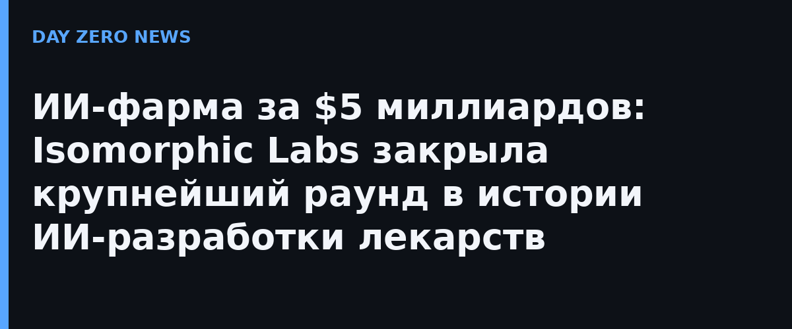

ИИ-фармкомпания Isomorphic Labs из Лондона официально объявила о раунде серии C на 5 миллиардов долларов — раунд оказался перекуплен, заявок было больше, чем разместили. Его возглавили Greenoaks и Sequoia Capital, к ним присоединились Andreessen Horowitz (a16z) и ряд новых инвесторов, а Alphabet вложила «значительную» сумму в собственную дочку. Из старых партнёров в раунде прошли все: Thrive Capital, MGX, GV, CapitalG, Temasek и британский суверенный фонд Sovereign AI Fund.
Согласно официальному пресс-релизу, касса пойдёт на три вещи: ускорение научных прорывов и собственных ИИ-разработок, масштабирование проприетарного движка разработки лекарств IsoDDE с расширением конвейера спроектированных ИИ терапевтических кандидатов, а также строительство глобальной ИИ-инженерной биоинфраструктуры. Китайская IT之家 добавляет: компания намерена развивать и базовые имитационные модели — ту научную базу, из которой выросла AlphaFold.
Для Isomorphic это третий крупный заход за полтора года: 600 миллионов в первом внешнем раунде (весна 2025-го), 2,1 миллиарда серии B (май 2026-го) — и вот 5 миллиардов серии C. Ещё в начале ноября источники писали, что компания вела переговоры об оценке в 40–50 миллиардов долларов; для сравнения, весь прошлый раунд был меньше новой суммы более чем вдвое. Bloomberg уже назвал сделку одним из самых заметных размещений ИИ-года.
Isomorphic — самый дорогой чистый игрок на рынке ИИ-разработки лекарств: бизнес-модель строится на многолетних партнёрствах с фармацевтическими гигантами (Eli Lilly, Novartis), где выплаты привязаны к успехам молекул на конвейере. Деньги такого размера означают, что инвесторы ставят на то, что «второй альфафолдовский» слой — полноценный движок доклиники — станет индустриальным стандартом в ближайшие годы.